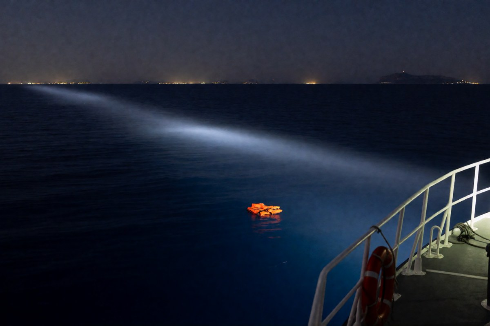

Cronaca · 19 novembre 2026
Lampedusa, si ribalta un barchino: dispersa una bambina di 6 anni

Cinquanta persone salvate dalla guardia costiera al largo dell'isola, una bambina della Costa d'Avorio non è stata ritrovata. Il natante era partito da Sfax e si è rovesciato poco prima dell'arrivo della motovedetta.
di Franco Zanghì
Un barchino di 7 metri con cinquantuno persone a bordo si è ribaltato ed è affondato al largo di Lampedusa nella notte fra il 18 e il 19 novembre. I militari della motovedetta Cp324 della guardia costiera hanno salvato cinquanta migranti, fra cui 10 donne e 3 minori. Manca una bambina di 6 anni, originaria della Costa d'Avorio: quando la notizia è uscita, non c'era alcuna traccia di lei.
Come è andata
Il natante era partito da Sfax, in Tunisia. Secondo l'ANSA si è rovesciato su un fianco poco prima di essere intercettato dalla motovedetta, facendo finire in acqua tutte le persone a bordo. I naufraghi soccorsi vengono dal Burkina Faso, dal Benin, dal Camerun, dalla Costa d'Avorio, dal Gambia, dalla Guinea e dal Mali. Secondo le prime ricostruzioni non ci sarebbero altri dispersi.
Tutti sono stati sbarcati durante la notte al molo Papa Francesco e poi portati nell'hotspot di contrada Imbriacola, dove, scrive il Fatto Quotidiano, si trovano 249 persone. Fra loro c'è la madre della bambina, assistita dagli psicologi.
Che cosa non si sa
Nel pomeriggio del 19 novembre un servizio del Tg2000 ha parlato della bambina come di una bambina morta in mare, mentre l'ANSA del mattino e il Fatto Quotidiano la danno come dispersa; lo stesso sommario del servizio televisivo contiene entrambe le parole. Alla data di pubblicazione di questo articolo non risultano comunicati della guardia costiera o della prefettura di Agrigento sul ritrovamento del corpo, e le due versioni restano come sono.
Il contesto
La notizia arriva il giorno dopo un'intervista che ha fatto discutere. Il sindaco di Lampedusa, Filippo Mannino, ha annunciato al Quotidiano Nazionale il proprio passaggio a Fratelli d'Italia e ha raccontato, come riporta Open, che Giorgia Meloni gli scrisse «Non la lascio da solo» il 12 settembre 2023, il giorno in cui sull'isola arrivarono quasi undicimila persone. Secondo il sindaco, al 31 ottobre di quest'anno gli arrivi sono poco meno di quindicimila, contro i centomila di tre anni fa.
I numeri dicono che qualcosa è cambiato. Ma basta una sola partenza per una tragedia, e finché da Sfax qualcuno mette in mare sette metri di scafo con cinquanta persone e dei bambini a bordo, il conto non si chiude. Chi organizza quei viaggi, incassando i soldi di famiglie disperate, è il primo responsabile di quello che succede in mare.
Fonti
- ANSA, «Si ribalta barca con migranti a Lampedusa, dispersa bimba di 6 anni», 19 novembre 2026
- Il Fatto Quotidiano, «Migranti, naufragio al largo di Lampedusa: dispersa una bambina di 6 anni», 19 novembre 2026
- Tg2000, «Naufragio a Lampedusa, morta in mare una bimba di 6 anni», 19 novembre 2026
- Open, l'intervista del sindaco Filippo Mannino al Quotidiano Nazionale e il passaggio a Fratelli d'Italia, 18 novembre 2026
- LiveSicilia e la Repubblica Palermo, le cronache dallo sbarco al molo Papa Francesco, 19 novembre 2026
Dato in aggiornamento alla data di pubblicazione: l'ANSA e il Fatto Quotidiano del 19 novembre danno la bambina come dispersa, un servizio del Tg2000 dello stesso pomeriggio la dà come morta in mare. Non risultano comunicati ufficiali sul ritrovamento.